RESEARCH · 7 MIN READ
How to start researching one topic.
How I turned a broad interest in sustainable energy into one research question, a dataset, and a published paper.
Ingénieur IA · Bretignolles-sur-Mer, France
Je suis Arunkumar Aluru, ingénieur IA stagiaire chez Matvi Consulting et étudiant en Master Systèmes d’Intelligence Artificielle à l’EPITA. Mon travail couvre le machine learning, les systèmes de données, la recherche d’information et l’IA générative appliquée.
Ouvert aux postes d’ingénieur IA et aux collaborations de recherche · temps plein à partir de 2027

01 / Profil
Je termine actuellement un Master Systèmes d’Intelligence Artificielle à l’EPITA à Paris, après un B.Tech en informatique spécialisé en IA et machine learning à la Kalasalingam Academy of Research and Education.
En parallèle de mes études, je suis ingénieur IA stagiaire chez Matvi Consulting à Bretignolles-sur-Mer. J’aime transformer des problèmes complexes de données et de modèles en systèmes fiables, mesurables, surveillés et réellement utilisés.
Langues Anglais · télougou (langue maternelle) · français (en apprentissage)
02 / Mon blog
Dernier article : mon parcours

RESEARCH · 7 MIN READ
How I turned a broad interest in sustainable energy into one research question, a dataset, and a published paper.
03 / Parcours
Sept. 2026 – aujourd’hui
MATVI CONSULTING · BRETIGNOLLES-SUR-MER
Développement de solutions d’IA concrètes et expérience pratique dans un environnement de conseil.
2025 – 2027
EPITA · PARIS
Data science en production, modélisation de séries temporelles, traitement automatique du langage et projets d’action-learning avec des partenaires industriels.
2023
TEACHNOOK · À DISTANCE
Conception et déploiement d’un modèle de machine learning derrière une application web Flask, avec des gains de performance grâce au prétraitement et à la validation en conditions réelles.
2021 – 2025
KALASALINGAM ACADEMY · INDE
Mémoire sur la prévision des énergies renouvelables par deep learning et IA générative, publié ensuite lors d’une conférence IEEE.
04 / Outils
PyTorch, TensorFlow, Keras, Scikit-learn, Pandas, NumPy, OpenCV, NVIDIA CUDA
OpenAI API, RAG, FAISS, BM25, embeddings, MCP, evaluation, agent workflows
FastAPI, Streamlit, Airflow, MLflow, Docker, Great Expectations, Grafana
AWS, SageMaker, Glue, Athena, Lambda, S3, PostgreSQL, DynamoDB, Git
05 / Projets choisis
01 / RAG & AGENTS
Un assistant de droit des affaires qui cite ses sources, avec une recherche hybride FAISS et BM25, une vérification de fidélité en direct, une vérification des faits multi-agents et une relecture humaine.
Projet d’équipe · GenAI Hackathon
19 questions d’évaluation sur 19 réussies, toutes les réponses jugées fidèles.
02 / RECOMMANDATION
Un système de recommandation en temps réel pour Amazon Electronics, construit à partir de 22,6 millions d’avis. Une recherche two-tower, des candidats FAISS et un classement LightGBM alimentent une boutique en ligne.
Équipe de 4 · j’ai conçu la recherche two-tower et l’architecture du système
27,5 ms de réponse moyenne de l’API, 85 % du catalogue couvert.
03 / MLOPS
Une boucle MLOps complète : ingestion validée, prédiction par lots planifiée, réentraînement automatique avec promotion sécurisée du modèle et suivi de la dérive.
Projet d’équipe
Validé, réentraîné et surveillé de bout en bout.
04 / DONNÉES AWS
Un data lake médaillon serverless sur AWS pour le risque de réhospitalisation des patients diabétiques, avec contrôles qualité automatisés, orchestration quotidienne et API de risque.
Projet de cours
101 766 séjours hospitaliers traités pour environ 0,49 $ par mois.
Une sélection parmi un portfolio plus large : prévision, apprentissage par renforcement, IA en santé, NLP et data engineering. Voir tous les dépôts.
06 / Publication
IEEE · ICICNIS 2024
Publié lors de la conférence IEEE ICICNIS 2024 (International Conference on IoT Based Control Networks and Intelligent Systems). L’article prévoit la production d’énergie solaire et éolienne grâce à une sélection de variables par ARIMA, Ridge et Lasso, un modèle LSTM et l’IA explicable (LIME) pour comprendre les prédictions.
07 / Contact
Je suis ouvert aux collaborations de recherche, aux postes d’ingénieur IA et aux échanges enrichissants.
Ou écrivez à aluruarunkumar19@gmail.com